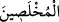
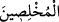

83. Onlardan ihlâsa erdirilmiş kulların bir yana,
“Onlardan” yâni Âdem’in zürriyyeti içinden hâlis kılınmış, “ihlâsa erdirilmiş
kulların bir yana,” Bunlar, Allah’ın, azgınlıktan koruyarak tâatine özgü kıldığı
kişilerdir.
“İhlâsa erdirilmiş” (
) kelimesi, (
) şeklinde fâil sîğası ile de okunmuştur
ki, kalplerini ve amellerini riyâ şâibesi taşımaksızın sadece Allah için yapanlar
anlamına gelir.
et-Te’vîlâtü’n-Necmiyye’de der ki: İblis daha sonra kendi aczi ve bu kulların
gücünden dolayı “Onlardan ihlâsa erdirilmiş kulların bir yana” demiştir.
Bazıları der ki: İhlâsa erdirilmiş kul odur ki kendisi ile Rabbi arasındaki sırrı hiçbir
melek öğrenip yazamaz; hiçbir şeytan öğrenip bozamaz; hiçbir heves öğrenip ifsâd
edemez. Sonra kullar arasında öyleleri vardır ki şeytan bunların velîlik gücünün
(saltanatının) ve hallerindeki izzetin izini gördüğü zaman sudaki tuzun erimesi gibi
eriyiverir; hiçbir hîlesi kalmaz ve böylece kendinde tuzak kurma gücü bulamaz. Aksine,
onları görür görmez bütün hîlelerini unutup onlara hiçbir vesvese oku atamaz ve hîlesi
Hak ehlini değil, kendisini kuşatır. Hak ehlini ifsâd edip onların hallerini beğenmeyen
şeytan vârislerinin durumu da aynen böyledir. Çünkü ehlullah da Allah dışındaki
şeylerden (mâsivâ) kim olursa olsun korunmuş vaziyettedir.
[45]. Müslim, “Birr”, 69; Tirmizî, “Birr”, 82; İbn Mâce, “Zühd”, 16; Müsned, II, 386.
[46]. Tirmizi, “Zühd”, 37.
[47]. Buhârî, “Bed’ü’l-halk”, 6; “Kader”, 1; Müslim, “Kader”, 1.